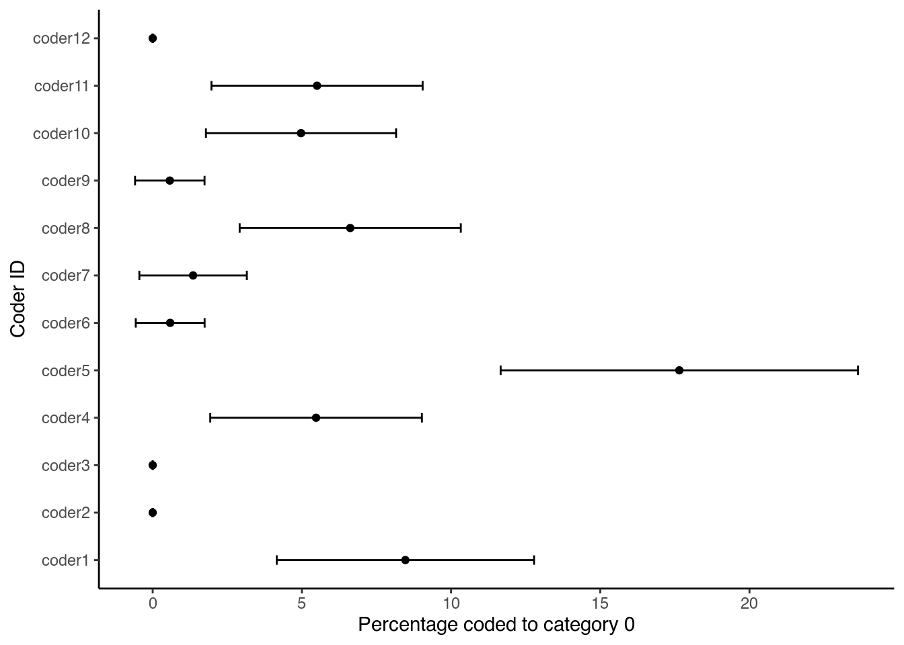

4.2 Visualizing Quality
Lamprianou (2020)Lamprianou, I. (2020). Measuring and visualizing coders’ reliability: New approaches and guidelines from experimental data. Sociological Methods & Research. https://doi.org/10.1177/0049124120926198 notes that existing reliability indices may mask coding problems and that the reliability of coding is not stable across coding units (as illustrated in the example given for Krippendorff’s \(\alpha\) above). To investigate the quality of coding he proposes using social network analysis (SNA) and exponential random graph models (ERGM). Here, we illustrate a different approach, based on the idea of sensitivity analysis.
The idea of this is to compare the codings of each coder against all others (and also against a benchmark or a gold standard). To do so, we need to bootstrap the coding reliability results to create an uncertainty measure around each coder’s results, following the approach proposed by Benoit et al. (2009)Benoit, K., Laver, M., & Mikhaylov, S. (2009). Treating words as data with error: Uncertainty in text statements of policy positions. American Journal of Political Science, 53(2), 495–513. https://doi.org/10.1111/j.1540-5907.2009.00383.x. The idea here is to use a non-parametric bootstrap for the codings of each coder (using 1000 draws with replacement) at the category level and then calculate the confidence intervals. Their width then depends on both the number of sentences coded by each coder (n) in each category and the number of coding categories that are not empty. Thus, larger documents and fewer empty categories result in narrower confidence intervals, while a small number of categories leads to wider intervals (Lowe & Benoit, 2011Lowe, W., & Benoit, K. (2011). Estimating uncertainty in quantitative text analysis. Annual Meeting of the Midwest Political Science Association.).
To start, the first thing we do is load two packages we need into R using the library command:
library(Hmisc)
library(combinat)In the following example we perform the sensitivity analysis on the coded sentences of the 1997 European Commission work programme, as seen earlier. Yet here, row represents a coder, and each column represents a coding category (c0 to c19). In each cell, we see the number of sentences that each coder coded in each category, with the column n giving the sum of each row:
coderid <- c("coder1", "coder2", "coder3", "coder4", "coder5",
"coder6", "coder7", "coder8", "coder9", "coder10", "coder11",
"coder12")
c0 <- c(14, 0, 0, 9, 29, 1, 2, 11, 1, 8, 9, 0)
c01 <- c(4, 1, 1, 2, 2, 3, 2, 1, 1, 1, 6, 0)
c02 <- c(5, 5, 5, 3, 5, 4, 6, 6, 3, 1, 3, 6)
c03 <- c(15, 12, 12, 26, 13, 22, 8, 14, 15, 25, 14, 21)
c04 <- c(5, 6, 6, 5, 4, 6, 6, 5, 6, 6, 6, 6)
c05 <- c(0, 0, 0, 1, 0, 0, 0, 0, 0, 0, 0, 0)
c06 <- c(9, 10, 22, 12, 9, 11, 11, 7, 9, 11, 6, 20)
c07 <- c(2, 1, 0, 0, 1, 1, 0, 1, 1, 0, 1, 2)
c08 <- c(3, 2, 2, 2, 2, 2, 1, 2, 2, 2, 2, 2)
c09 <- c(5, 7, 5, 5, 5, 6, 5, 6, 8, 7, 7, 6)
c10 <- c(23, 23, 22, 23, 18, 23, 22, 23, 23, 25, 24, 22)
c11 <- c(31, 31, 33, 40, 25, 23, 25, 30, 40, 16, 40, 31)
c12 <- c(2, 3, 1, 4, 0, 3, 1, 5, 3, 2, 3, 3)
c13 <- c(2, 4, 3, 3, 3, 3, 2, 5, 2, 2, 3, 2)
c14 <- c(13, 12, 11, 13, 9, 14, 18, 14, 2, 22, 12, 14)
c15 <- c(9, 8, 8, 5, 7, 8, 10, 10, 13, 8, 8, 7)
c16 <- c(0, 0, 0, 0, 0, 0, 0, 0, 0, 0, 0, 0)
c17 <- c(3, 3, 4, 1, 3, 3, 2, 1, 3, 3, 3, 3)
c18 <- c(16, 33, 27, 8, 26, 28, 31, 22, 28, 23, 14, 16)
c19 <- c(3, 3, 2, 1, 3, 3, 3, 1, 4, 2, 3, 3)
c20 <- c(0, 0, 0, 0, 0, 0, 0, 0, 0, 0, 0, 0)
n <- c(164, 164, 164, 163, 164, 164, 155, 164, 164, 164, 164,
164)
data_uncertainty <- data.frame(coderid, c0, c01, c02, c03, c04,
c05, c06, c07, c08, c09, c10, c11, c12, c13, c14, c15, c16,
c17, c18, c19, c20, n, stringsAsFactors = FALSE)We then tell R how many coders we have. As this number is equal to the number of rows we have, we can get this number using the nrow command. We also specify the number of bootstraps we want to carry out (1000) and transform our data frame into an array. We do the latter as R needs the data in this format later on:
nman <- nrow(data_uncertainty)
nrepl <- 1000
manifBSn <- manifBSnRand <- array(as.matrix(data_uncertainty[,
2:21]), c(nman, 20, nrepl + 1), dimnames = list(1:nman, names(data_uncertainty[,
2:21]), 0:nrepl))We then bootstrap the sentence counts for each coder and compute percentages for each category using a multinomial draw. First, we define p, which is the proportion of each category over all the coders. Then, we input this value together with the total number of codes n into the rmultinomial command, which gives the random draws. As we want to do this a 1000 times, we place this command into a for loop:
p <- manifBSn[, , 1]/n
for (i in 1:nrepl) {
manifBSn[, , i] <- rmultinomial(n, p)
}With this data, we can then ask R to compute the quantities of interest. These are standard errors for each category, as well as the percentage coded for each category:
c0SE <- apply(manifBSn[, "c0", ]/n * 100, 1, sd)
c01SE <- apply(manifBSn[, "c01", ]/n * 100, 1, sd)
c02SE <- apply(manifBSn[, "c02", ]/n * 100, 1, sd)
c03SE <- apply(manifBSn[, "c03", ]/n * 100, 1, sd)
c04SE <- apply(manifBSn[, "c04", ]/n * 100, 1, sd)
c05SE <- apply(manifBSn[, "c05", ]/n * 100, 1, sd)
c06SE <- apply(manifBSn[, "c06", ]/n * 100, 1, sd)
c07SE <- apply(manifBSn[, "c07", ]/n * 100, 1, sd)
c08SE <- apply(manifBSn[, "c08", ]/n * 100, 1, sd)
c09SE <- apply(manifBSn[, "c09", ]/n * 100, 1, sd)
c10SE <- apply(manifBSn[, "c10", ]/n * 100, 1, sd)
c11SE <- apply(manifBSn[, "c11", ]/n * 100, 1, sd)
c12SE <- apply(manifBSn[, "c12", ]/n * 100, 1, sd)
c13SE <- apply(manifBSn[, "c13", ]/n * 100, 1, sd)
c14SE <- apply(manifBSn[, "c14", ]/n * 100, 1, sd)
c15SE <- apply(manifBSn[, "c15", ]/n * 100, 1, sd)
c16SE <- apply(manifBSn[, "c16", ]/n * 100, 1, sd)
c17SE <- apply(manifBSn[, "c17", ]/n * 100, 1, sd)
c18SE <- apply(manifBSn[, "c18", ]/n * 100, 1, sd)
c19SE <- apply(manifBSn[, "c19", ]/n * 100, 1, sd)
per0 <- apply(manifBSn[, "c0", ]/n * 100, 1, mean)
per01 <- apply(manifBSn[, "c01", ]/n * 100, 1, mean)
per02 <- apply(manifBSn[, "c02", ]/n * 100, 1, mean)
per03 <- apply(manifBSn[, "c03", ]/n * 100, 1, mean)
per04 <- apply(manifBSn[, "c04", ]/n * 100, 1, mean)
per05 <- apply(manifBSn[, "c05", ]/n * 100, 1, mean)
per06 <- apply(manifBSn[, "c06", ]/n * 100, 1, mean)
per07 <- apply(manifBSn[, "c07", ]/n * 100, 1, mean)
per08 <- apply(manifBSn[, "c08", ]/n * 100, 1, mean)
per09 <- apply(manifBSn[, "c09", ]/n * 100, 1, mean)
per10 <- apply(manifBSn[, "c10", ]/n * 100, 1, mean)
per11 <- apply(manifBSn[, "c11", ]/n * 100, 1, mean)
per12 <- apply(manifBSn[, "c12", ]/n * 100, 1, mean)
per13 <- apply(manifBSn[, "c13", ]/n * 100, 1, mean)
per14 <- apply(manifBSn[, "c14", ]/n * 100, 1, mean)
per15 <- apply(manifBSn[, "c15", ]/n * 100, 1, mean)
per16 <- apply(manifBSn[, "c16", ]/n * 100, 1, mean)
per17 <- apply(manifBSn[, "c17", ]/n * 100, 1, mean)
per18 <- apply(manifBSn[, "c18", ]/n * 100, 1, mean)
per19 <- apply(manifBSn[, "c19", ]/n * 100, 1, mean)We then bind all these quantities together in a single data frame:
dataBS <- data.frame(cbind(data_uncertainty[, 1:22], c0SE, c01SE,
c02SE, c03SE, c04SE, c05SE, c06SE, c07SE, c08SE, c09SE, c10SE,
c11SE, c12SE, c13SE, c14SE, c15SE, c16SE, c17SE, c18SE, c19SE,
per0, per01, per02, per03, per04, per05, per06, per07, per08,
per09, per10, per11, per12, per13, per14, per15, per16, per17,
per18, per19))While we can now inspect the results by looking at the data, it becomes more clear when we visualise this. While R has some inbuilt tools for visualisation (in the graphics package), these tools are rather crude. Thus, here we will use the ggplot2 package, which extends our options, and which has an intuitive structure:
library(ggplot2)First, we make sure that the variable coderid is a factor and make sure that it is in the right order:
dataBS$coderid <- as.factor(dataBS$coderid)
dataBS$coderid <- factor(dataBS$coderid, levels(dataBS$coderid)[c(1,
5:12, 2:4)])Then, we calculate the 95% confidence intervals for each category. We do so using the percent of each category and the respective standard error, and add these values to our data-set:
c0_lo <- per0 - (1.96 * c0SE)
c0_hi <- per0 + (1.96 * c0SE)
c01_lo <- per01 - (1.96 * c01SE)
c01_hi <- per01 + (1.96 * c01SE)
c02_lo <- per02 - (1.96 * c02SE)
c02_hi <- per02 + (1.96 * c02SE)
dataBS <- cbind(dataBS, c0_lo, c0_hi, c01_lo, c01_hi, c02_lo,
c02_hi)Finally, we generate the graphs for each individual category:
ggplot(dataBS, aes(per0, coderid)) + geom_point() + geom_errorbarh(aes(xmax = c0_hi,
xmin = c0_lo), height = 0.2) + xlab("Percentage coded to category 0") +
ylab("Coder ID") + theme_classic()
ggplot(dataBS, aes(per01, coderid)) + geom_point() + geom_errorbarh(aes(xmax = c01_hi,
xmin = c01_lo), height = 0.2) + xlab("Percentage coded to category 01") +
ylab("Coder ID") + theme_classic()
ggplot(dataBS, aes(per02, coderid)) + geom_point() + geom_errorbarh(aes(xmax = c02_hi,
xmin = c02_lo), height = 0.2) + xlab("Percentage coded to category 02") +
ylab("Coder ID") + theme_classic()
Each figure shows the percentage that each of the coders coded in the respective category of the coding scheme. We thus use the confidence intervals around the estimates to look at the degree of uncertainty around each estimate. We can read the plots by looking if the dashed line is within the confidence intervals for each coder. The more the coders deviate from the benchmark or standard, the less likely it is that they understood the coding scheme in the same way. It also means that it is more likely that a coder would have coded the work programme much different from the benchmark coder. Thus, such a sensitivity analysis is like having a single reliability coefficient for each coding category.